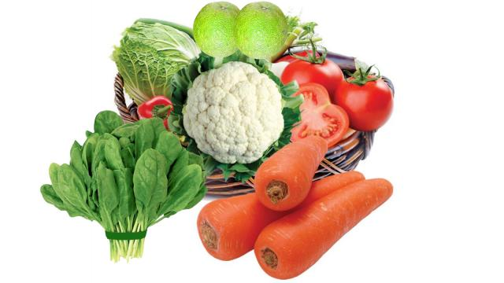

Breaking News


শীতে ত্বক সজীব রাখতে যা খাবেন

হালকা হালকা শীত টের পাচ্ছেন নিশ্চয়ই? শীতকালে শুষ্ক শীতল হাওয়া ও বাতাসে বেড়ে যাওয়া ধুলাবালুর কারণে ত্বক হয়ে যায় খসখসে ও মলিন। এর ফলে দেখা দেয় নানা সমস্যা—যেমন ত্বক ফেটে যাওয়া, ত্বকে চুলকানি ইত্যাদি। তাই শীতকালে ত্বকের সুস্বাস্থ্য রক্ষায় দরকার বাড়তি যত্ন ও সতর্কতা। শীতকালেই কিছু সবজি ও খাবার পাওয়া যায়, যা খেলে আপনার ত্বক সজীব থাকে। শীতের শুরু থেকেই এ ধরনের খাবার ও সবজি খাদ্যতালিকায় রাখতে পারেন। পুষ্টিবিদেরা বলেন, শীতকালীন কয়েকটি সবজি খেলে উপকার পাওয়া যায়। এর মধ্যে রয়েছে গাজর, বাঁধাকপি, ফুলকপি, টমেটো। এর বাইরেও ত্বকের যত্নে এ সময় জাম্বুরা ও পালংশাক ত্বকের জন্য উপকারী। গাজর গাজরে আছে প্রচুর ভিটামিন এ। এটি ত্বক ও শ্বাসনালির শ্লৈষ্মিক ঝিল্লি ঠিক রাখতে কাজ করে। শরীরে ‘ফাইটার সেলস’ বা জীবাণুর বিরুদ্ধে লড়াইয়ের কোষ হিসেবে পরিচিত ‘টি সেল’ তৈরিতে ভূমিকা রাখে। এতে শরীরে কোনো সংক্রমণ হয় না। বাঁধাকপি বাঁধাকপিতে পাতার পরিমাণ বেশি বলে চর্বি বা কোলেস্টেরল প্রায় নেই। ১০০ গ্রাম বাঁধাকপিতে ২৫ ক্যালরি শক্তি পাওয়া যায়। আর ভিটামিন সি পাওয়া যায় প্রায় ৩৬ মিলিগ্রাম। এই সবজিতে আরও আছে ভিটামিন ‘বি ফাইভ’, ‘বি সিক্স’, ‘বি সেভেন’, ‘বি ওয়ান’ ও নানা ধরনের ফাইটোকেমিক্যাল। ফুলকপি ভিটামিন সি ও ভিটামিন কে-র চমৎকার উৎস ফুলকপি। এতে আরও আছে ফলেট ও ভিটামিন ‘বি সিক্স’। প্রচুর পরিমাণে আঁশ ও জলীয় উপাদানসমৃদ্ধ হওয়ায় ফুলকপি কোষ্ঠকাঠিন্য দূর করে এবং অন্ত্রের ক্যানসারের ঝুঁকি কমায়। এক কাপ (২৪০ গ্রাম) ফুলকপিতে আছে ২৭ ক্যালরি শক্তি, ২ গ্রাম প্রোটিন। টমেটো টমেটোতে ভিটামিন এ ও সি আছে, যা শরীরের রোগ প্রতিরোধ ক্ষমতা বাড়ায়। আমেরিকান জার্নাল অব ক্লিনিক্যাল নিউট্রিশনে প্রকাশিত এক গবেষণা নিবন্ধে বলা হয়, যাঁরা টানা তিন সপ্তাহ টমেটোসমৃদ্ধ খাবার খান, তাঁদের রোগবালাই কিছুটা কমে। পালংশাক পালংশাকে রোগ প্রতিরোধ ক্ষমতা বাড়ানোর শক্তি রয়েছে। এতে ভিটামিন বি৬ আছে, যা অ্যান্টিবডি তৈরি করে এবং শরীরকে রোগের বিরুদ্ধে লড়তে সাহায্য করে। জাম্বুরা জাম্বুরায় প্রচুর পরিমাণে ভিটামিন সি থাকে, যা আপনার ত্বককে সতেজ রাখে। প্রতিদিন এক গ্লাস করে জাম্বুরার জুস পান করতে হবে পুরো শীতকাল। জাম্বুরা মূলত লো ক্যালরিসমৃদ্ধ ফল। খাবারের রুচি বাড়াতে জাম্বুরা বেশ কার্যকর। মাল্টার চেয়ে জাম্বুরায় পানির পরিমাণ বেশি হওয়ায় ত্বকের জন্য এটি বেশ ভালো কাজ করে। কীভাবে খাবেন? বারডেম হাসপাতালের সাবেক প্রধান পুষ্টি কর্মকর্তা আখতারুন নাহারের তথ্য অনুযায়ী, ময়লা, পোকামাকড় ও কীটনাশক বা রাসায়নিকের হাত থেকে বাঁচতে প্রচুর পরিমাণে পানি দিয়ে ভালো করে ধুতে হবে সবজি। একটু লবণ পানিতে ১৫ থেকে ৩০ মিনিট ভিজিয়ে রাখলে আরও ভালো; বিশেষ করে যদি কাঁচা খেতে চান। খুব বেশি সেদ্ধ করলে ভিটামিন সি নষ্ট হয়ে যায়। তাই হালকা বা ভাপে সেদ্ধ করে খাওয়াই ভালো। ভিটামিন এ তেল বা ফ্যাটে দ্রবণীয়। তাই এসব সবজি রান্না করার সময় খানিকটা তেল ব্যবহার করতে হবে। বিশেষত, যদি শিশুদের খাওয়াতে চান। মুখ বন্ধ প্লাস্টিকের ব্যাগে ৫–৭ দিন পর্যন্ত রেফ্রিজারেটরে রেখে খেতে পারেন। তবে শীতকালীন সবজি তাজা অবস্থায় খাওয়াই সবচেয়ে উপকারী।
দীর্ঘ সময় কম্পিউটারে কাজ করেন?
আমরা অনেকেই দীর্ঘ সময় ধরে, কেউ কেউ প্রায় সারা দিনই চেয়ারে বসে কম্পিউটারে কাজ করে থাকি। এভাবে কাজ করার কারণে কোমর ও ঘাড়ে ব্যথা, পিঠে অস্বস্তি ও মাথা, চোখ ব্যথা করতে পারে। এ ছাড়া চেয়ারে হাতল না থাকলে ও কি–বোর্ড, মাউসের জায়গার অসামঞ্জস্যের কারণে কনুই, কবজি বা আঙুলে সমস্যা হতে পারে। তাই দীর্ঘ সময় বাড়িতে বা অফিসে বসে কাজ করার সময় সঠিক দেহভঙ্গি ও সঠিক চেয়ার–টেবিল জরুরি। • কম্পিউটারের মনিটর ও মাথার লেভেল সমান্তরাল থাকবে। পর্দার উপরিভাগ থাকবে চোখের সমান্তরালে, যাতে ঘাড় উঁচু করে না দেখতে হয়। • হাত দুটো কি–বোর্ডের লেভেলে থাকবে। দূরত্ব বেশি হবে না। • পা থাকবে পাদানির ওপর বা সমতল মেঝেতে। • পেছনে ও কোমরে সাপোর্ট থাকলে ভালো। এ জন্য পোলো বা বালিশ বা প্যাঁচানো তোয়ালে ব্যবহার করা যায়। • কম্পিউটার ডেস্ক এমন জায়গায় থাকবে যেন সূর্যের আলো ব্যাঘাত না ঘটায়। • একেকজন মানুষের জন্য একেকভাবে উপযুক্ত টেবিল, চেয়ার, ডেস্ক ইত্যাদির মাপকাঠি ঠিক করতে হয়। এ জন্য প্রয়োজনে প্রশিক্ষিত ব্যক্তির সাহায্য নেওয়া যায়। কারও কারও জন্য বিশেষ ধরনের ইকুইপমেন্ট, যেমন-বিশেষ কিবোর্ড, কি–বোর্ড ট্রে, ডকুমেন্ট হোল্ডার, বিশেষ অফিস চেয়ার, পাদানির ব্যবস্থা করা লাগতে পারে। • কাজের ফাঁকে কোমর ও পেছনের স্ট্রেচিং এক্সারসাইজ শিখে নিতে হবে। অকুপেশনাল থেরাপিস্ট, সিআরপি, ঢাকা


© All Rights Reserved
Prothom Alo 1998 - 2018
Editor & publisher: Matiur Rahman.
CA Bhaban, 100 Kazi Nazrul Islam avenue, Karwan Bazar, Dhaka 1215
Phone: 8180078-81, Fax: 9130496, E-mail: info@prothom-alo.info
Reproduction of any content,
news or article published on this website is
strictly prohibited.Privacy